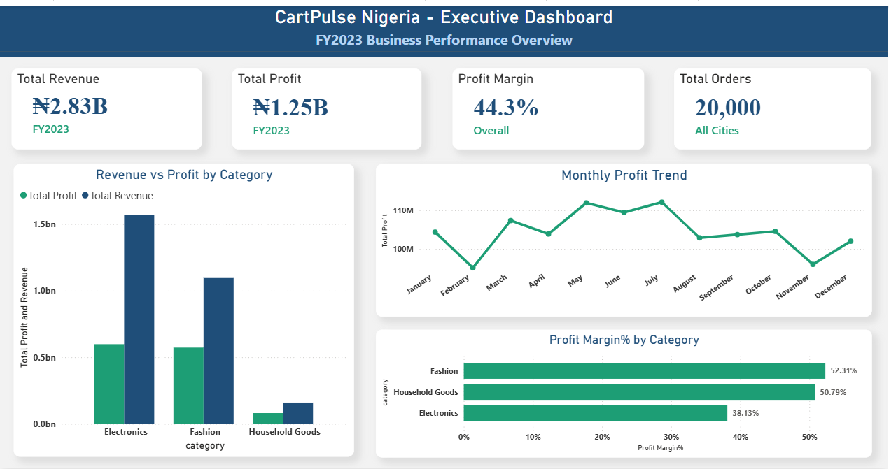
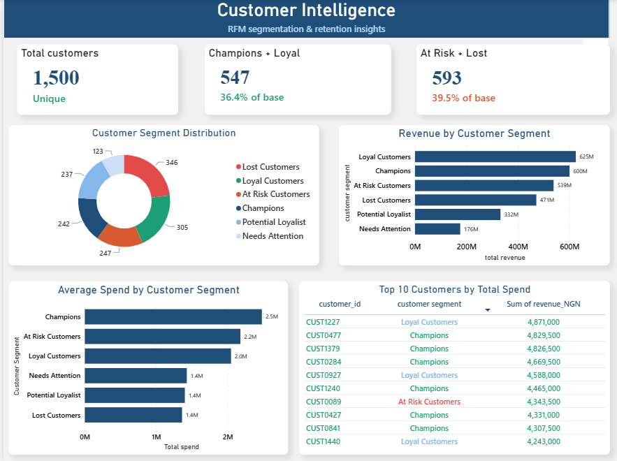

Custom
Dashboards
See the numbers that matter without digging through endless spreadsheets.
BUSINESS INTELLIGENCE & ANALYTICS
BEXIRA helps businesses turn scattered, messy data into clear insights, decision-ready dashboards, and decisions they can act on.
Key insight
Revenue is growing, but profit is shrinking.
Your business is already generating information every day. The problem is knowing what matters, what doesn't, and what to do next.
We bring your business data together, uncover the patterns hiding inside it, and turn those patterns into practical business intelligence.
See the numbers that matter without digging through endless spreadsheets.
Understand sales, customers, products and performance with analysis built around your questions.
Clean, structure, and organize messy business data so it can actually be trusted.
Go beyond charts. We surface the business implications behind the numbers.
Tell us what you're trying to solve. We'll review your needs and discuss how BEXIRA can help.
Start a projectWe start with the business problem—not the dashboard. What are you trying to understand or improve?
We clean, organize and structure the relevant data into something reliable and useful.
We identify trends, gaps, opportunities and the metrics that actually explain performance.
You get a decision-ready dashboard or analysis with insights you can put to work.
Good analytics doesn't stop at “what happened?” It asks why—and what that means for the business.
REVENUE GROWTH
A business can grow revenue while quietly losing efficiency. We look beneath top-line growth to understand margins, customer behaviour, product performance and where the real story is.
View case study

Have a business question hiding in your data?
Start a projectWe don't believe a dashboard is valuable because it looks impressive.
It is valuable when it helps someone spot a problem sooner, understand a customer better, protect margin, find an opportunity, or make a decision with more confidence.
“I'd rather tell a business a dashboard won't help them than sell them one that won't.”— Amara, Founder, BEXIRA
Amara is a data analyst working across SQL, Python, Power BI, Tableau and Excel, with a background in Medical Laboratory Science that shaped a habit of testing assumptions before trusting a result. BEXIRA exists because too many businesses treat a dashboard as the finish line — it's built to focus on the decision behind the numbers instead.
See more of Amara's analytical workGrowing businesses with sales, customer or product data — especially e-commerce and retail, though we take on other data-rich businesses too.
No. Cleaning and structuring messy data is part of what we do — it's usually the first step, not a prerequisite.
Power BI, Excel, SQL, Python and Tableau, depending on what fits the project and how you want to keep using the output afterward.
It depends on scope, but most dashboard and analysis projects take one to three weeks from data handoff to delivery.
Yes. Your data and findings are treated as confidential and are never shared, reused or referenced without your permission.
A decision-ready dashboard, a written summary of what the data shows, and clear recommendations you can act on — not just charts.
HAVE DATA. HAVE A QUESTION?
Tell us what you're trying to understand. We'll help you figure out what the data can tell you.